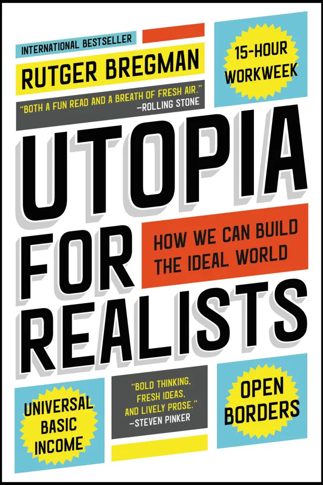

(Audio) Utopia for Realists, by Bregman
Saturday November 2, 2024
Utopia for Realists is a more accessible Inventing the Future: it's in favor of UBI and less work, against neoliberalism/MPS, and Utopia's "underdog socialism" is like Inventing's "folk politics." It differs slightly in being explicitly for open borders, like Caplan, and there are some other differences in focus and examples. The original Dutch title is literally "free money for everyone."
“Work is the refuge of people who have nothing better to do.” (Oscar Wilde, quoted page 68)
I think Bregman is too concerned with preserving the appearance of the Puritan work ethic. Like many, he seems to think that giving people money has to be shown not to reduce hours of work. This is silly and backward. We should be trying to get people to stop working for pay.
I think it's fine to pull in Mullainathan and Shafir, as he does, on the downsides of scarcity, but the reasoning should be that it is unjust to let people be in bad situations. The trap here is getting into an argument about who is deserving. If we have to prove that people are deserving, we've lost already.
Some neat stuff:
- Cockaigne: "a land of plenty in medieval myth"
- Speenhamland: 1795 "basic income" program, still argued over: Did it suppress wages? Did it increase sloth? More children? Loose morals?
- Mincome: "Manitoba Basic Annual Income Experiment" (1970s)
- Physiocracy: some kind of economic theory that valued the productivity of land/agriculture (over generic labor, etc.)
And there's a chapter on GDP (etc.) which made me think that one could teach a whole course on the downsides or risks of data and data science, much as in The Tyranny of Metrics.

“The RAND Corporation, an influential think tank, foresaw a future in which just 2% of the population would be able to produce everything society needed.” (page 18)
But this cites not a RAND study, but “Hillel Ruskin (ed.), Leisure, Toward a Theory and Policy (1984), p. 152,” and I don't see that online, so it'll take me a while to check.
“Not until 1978 was the plan for a basic income shelved once and for all, however, following a fatal discovery upon publication of the final results of the Seattle experiment. One finding in particular grabbed everybody’s attention: The number of divorces had jumped more than 50%. Interest in this statistic quickly overshadowed all the other outcomes, such as better school performance and improvements in health. A basic income, evidently, gave women too much independence.
Ten years later, a reanalysis of the data revealed that a statistical error had been made; in reality, there had been no change in the divorce rate at all.”
The citation here is Cain and Wissoker... I've heard about this divorce finding before ("It's bad!" "It's good!") but I don't think I've heard about this nullifying result... Why not? I'm not digging very deep here, but Bregman seems quite Pollyannaish in general throughout the book, which makes him seem less reliable in general on specifics.
“The free books had made no difference. Test scores showed no improvement.” (page 91)
But this isn't quite what the study said - and I didn't even read beyond the abstract! "However, for those students in the top quintile of the distribution of initial academic achievement, the program raised test scores by at least 0.2 standard deviations."